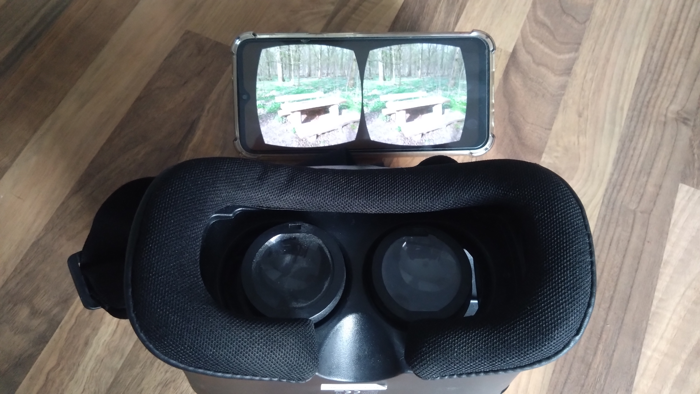
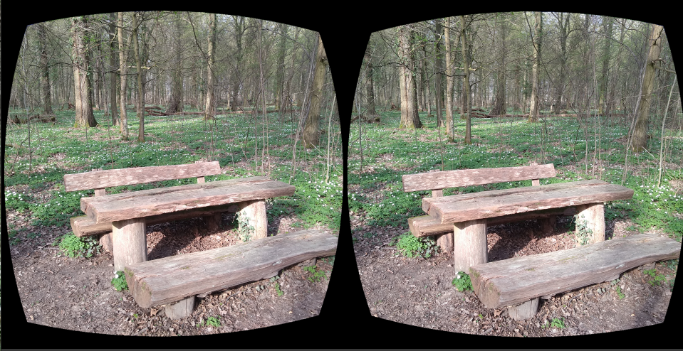

This simple HTML5 file uses the standard fullscreen mode of browsers after a mouse click to present several stereoscopic images in fullscreen mode. After starting the animation on your smartphone, please insert your mobile device into a VR headset to preview the 3D scenario.
This repository is created for a Wikiversity Learning Resource about Stereoscopy.
GitHub Repository
See GitHub repository for the OpenSource code of the WebApp or download the WebApp as ZIP-file from GitHub.
Start WebApp
Delay: seconds duration until the stereoscopy image is changed-

Stereoscopy Image - Preview
Due to the fact that VR headset for smartphones might not use the full screen for display size, please adjust the black margin of the following stereoscopic image according to your VR headset:
Percentage Stereoscopy Image Width86%

The following stereoscopy image was created with a different aspect ratio. The aspect ratio should be selected according to screen size of smartphone display.
With the slide above you can adjust the margin according to used area in your VR headset.